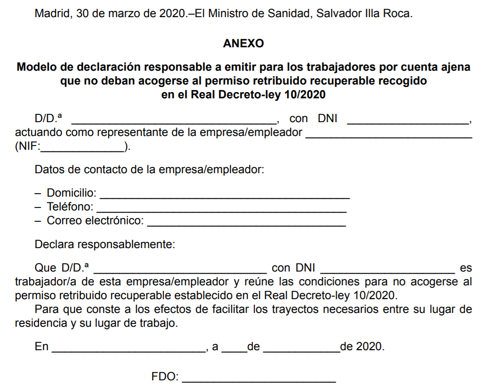
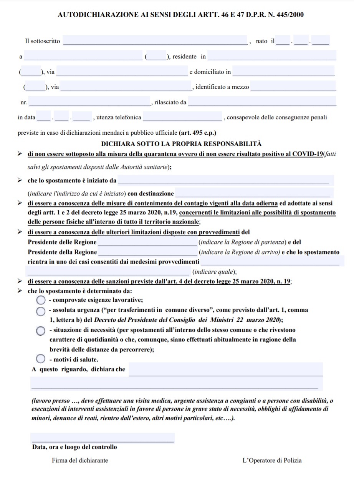

Types of credentials
The system allows the issuance and verification of many types of credentials. At the first level there are:
-
Self-issued credentials: they are basically a self-declaration in a convenient digital form that can be exchanged among different parties. They are credentials issued by the citizen stating some fact about herself and her situation. They are the equivalent to the citizen using the self-diagnostics questionnaires to get advice, or to the functionality in some applications to help track quarantine and confinement.
-
Third-party credentials: credentials issued by third parties stating a fact about the subject. For example, a certification of immunisation or a certificate from a company stating that a given employee is required for essential works at some time in some place.
The following sections describe some of the possible credentials managed by the system, but they can be added or modified as required.
1. Third-party credentials
1.1 Immunisation
A health authority or professional attests that the citizen is immunized, and so has a very low risk of getting ill again.
These immunity certificates could let people to leave the pandemia lockdown earlier than the rest of the population if they test positive for antibodies to the virus. Even when the lockdown is released, some partial restrictions may be in place and these certificates could allow some people to move more freely and to more places.
1.2 Safe conduct (as a responsible declaration)
In this context a Safe conduct, or letter of transit, is a certificate issued to a person to allow that person to move to some place with a given purpose.
Electronic equivalent of a responsible declaration issued by a company/employer to an employee to allow her to move. As an example, the official paper-based responsible declaration for Spain (from the Ministry of Health) is the following:

1.2.1 The data included in the form is:
- Employer
-
- Full name of person representative of the company
- National ID of the representative
- Tax ID of the employer
- Contact data of the company/employer:
- Postal address
- Phone
- Employee
-
- Full name of employee
- National ID of employee
- Place, date and signature
- Handwritten signature of representative of th ecompany
And the one for Italy:

1.3 Safe conduct (oficial)
Basically, the same as the previous one but issued by an official authority.
2. Self-attestations
2.1 Confinement
2.1.1 I responsibly declare that as by (date)
- I start my isolation/confinement/quarantine process
- I finish my isolation/confinement/quarantine process
2.1.2 Personal data
- First Name
- Mid Name
- First Last Name
- Second Last Name
- ID Document
- Gender
- Age
2.1.3 Confinement premises data
- Region
- Country
- City
- Address
- Zip code
2.2 Interruption of confinement
2.2.1 Purpose and date
- Transportation date
I declare that my displacement is related with first necessity and the necessary activity that I following express:
- Purchase of food, pharmaceutical and first necessity products
- Attendance to a health center, service or institution
- Commuting to work premise, to render professional or enterprise tasks
- Return to residence or home
- Assist or attend elder, minors of age, handicapped or vulnerable people
- Essential commuting to a financial or insurance entity
- Necessity situation or reasons of force majeure
2.2.2 Personal data
- First Name
- Mid Name
- First Last Name
- Second Last Name
- ID Document
- Gender
- Age
2.2.3 Initial location
- Region
- Country
- City
- Address
- Zip code
2.2.4 Destination
- Region
- Country
- City
- Address
- Zip code
2.3 Symptoms
2.3.1 I responsibly declare that as by (date)
- I have cough and fever
- I have breathing difficulties
- I have cough, fever and breathing difficulties
2.3.2 Personal data
- First Name
- Mid Name
- First Last Name
- Second Last Name
- ID Document
- Gender
- Age
2.3.3 Confinement premises data
- Region
- Country
- City
- Address
- Zip code
2.4 Infection
2.4.1 I responsibly declare that as by (date)
- I have been diagnosed with Corona Virus by a medical entity
2.4.2 Personal data
- First Name
- Mid Name
- First Last Name
- Second Last Name
- ID Document
- Gender
- Age
2.4.3 Confinement premises data
- Region
- Country
- City
- Address
- Zip code
2.5 Recovery
2.5.1 I responsibly declare that as by (date)
- I have recovered from the Corona Virus (personal perception)
- I have recovered from the Corona Virus (verified by a medical entity)
2.5.2 Personal data
- First Name
- Mid Name
- First Last Name
- Second Last Name
- ID Document
- Gender
- Age
2.5.3 Confinement premises data
- Region
- Country
- City
- Address
- Zip code